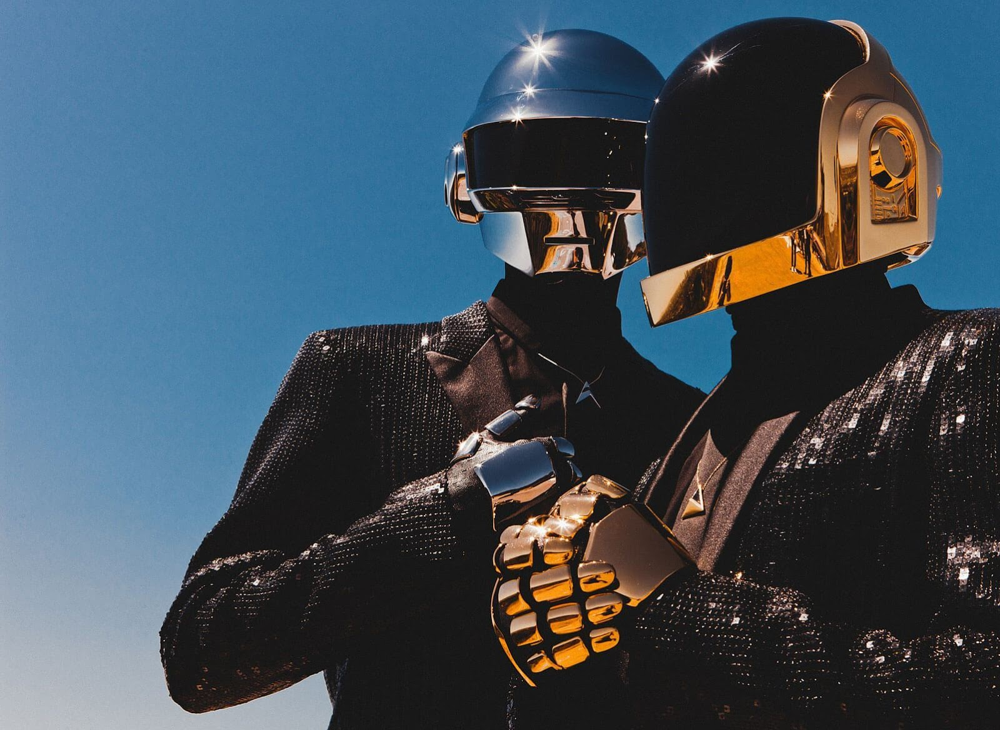
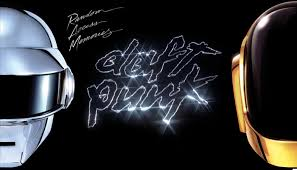
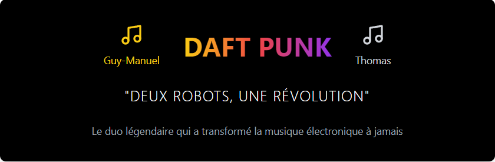
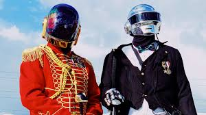
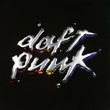
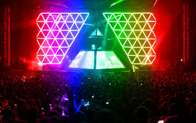

Actualité
En 2021,Daft Punk a officiellement annoncé sa séparation.Le duo a partagé la nouvelle avec une vidéo intitulée "Epilogue", marquant la fin de leur carrière de 28 ans ensemble.
Discographie

Leur impact culturel :D

Random Access Memories (2013)
Événements
Deux Robots,Une Révolution

Le duo légendaire qui a transformé la musique électronique à jamais.
Concert Daft Punk Alive 2007

Titres populaires : "Da Funk", "Around the World"
Concert à Berlin - Alive 2007

La tournée légendaire qui a marqué l'histoire de la musique électronique.
Concert à Berlin - Alive 2007

Une expérience audiovisuelle unique mêlant leurs plus grands succès.